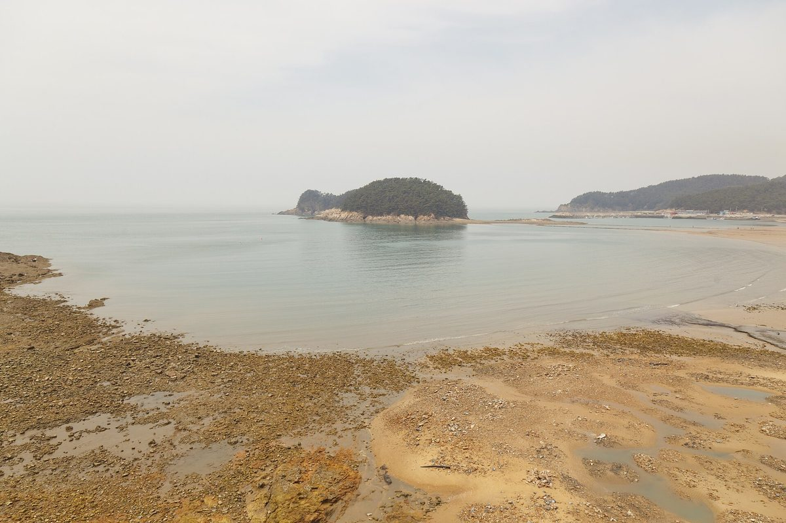

윤희신 태안군수, 주민 수용성 없으면 해상풍력 승인 못 한다…군 추진 집적화단지는 주민 이익공유 기반

태안군개발위원회 군정 현안 간담회서 밝혀…태안해상풍력 행정절차엔 찬반 의견 함께 제출, 반대 어업인·단체와 충분히 협의하라고 사업자에 주문
윤희신 태안군수가 30일 주민 수용성이 확보되지 않은 해상풍력 사업은 승인할 수 없다는 입장을 밝혔다. 윤 군수는 이날 오전 태안군청 중회의실에서 ㈔태안군개발위원회가 연 군정 현안 간담회에서 이복환 회장의 질의에 답하며, 군이 추진하는 해상풍력 집적화단지 지정과 개별 사업자의 발전사업 행정절차를 나눠 설명했다. 집적화단지는 주민 이익공유와 관련한 기반이며, 군 협의 등 조건을 갖추는지에 따라 앞으로의 추진이 달라진다는 것이 윤 군수의 설명이다. 개별 사업인 태안해상풍력은 행정절차가 진행 중이고 이해관계 단체의 의견을 받았는데 찬성과 반대가 함께 들어와 있어, 절차는 밟되 주민 수용성을 중요한 판단 기준으로 삼겠다고 했다. 윤 군수는 에너지 전환의 방향에는 동의하지만 특정 지역이나 업종에 일방적인 피해를 주는 사업에 행정이 동의할 수는 없다며, 반대하는 어업인과 단체가 있는 만큼 사업자가 충분히 협의해 동의를 끌어낼 여건을 만들라고 주문했다. 군수가 말한 승인이 어떤 인허가를 가리키는지, 집적화단지의 규모와 이익공유 방식은 이날 설명에서 구체적으로 나오지 않았다.
시민에너지 관점
찬반 의견이 함께 접수된 태안해상풍력은 주민 수용성을 사업자가 받아 오는 동의서로만 다루면 갈등이 끝나지 않는다는 점을 보여 준다. 군수가 승인의 잣대로 주민을 세운 것은 반가운 일이지만, 수용성이 동의 비율에 머물면 사업자는 보상 협상으로 숫자를 채우고 반대하는 주민과 어업인은 밀려나기 쉽다. 석탄화력 단계적 폐지를 앞둔 태안에서 주민과 어업인이 발전소 지분을 갖고 배당과 의사결정에 참여할 때, 해상풍력은 남의 사업이 아니라 마을의 다음 소득과 일자리가 된다. 태안군은 집적화단지의 이익공유를 주민 출자와 지분 참여 중심으로 설계하고, 같은 원칙을 개별 사업 협의에도 요구해야 한다.
출처: 오마이뉴스 2026-10-30 신문웅(시민기자) 원문 보기
ユン・ヒシン泰安郡守、住民の受容性がなければ洋上風力は承認できない…郡が進める集積化団地は住民利益共有の基盤
泰安郡開発委員会の郡政懇談会で表明…泰安洋上風力の行政手続きには賛否両方の意見が提出、反対する漁業者・団体と十分協議するよう事業者に求める
ユン・ヒシン泰安郡守は30日、住民の受容性が確保されていない洋上風力事業は承認できないとの立場を明らかにした。ユン郡守は同日午前、泰安郡庁の中会議室で社団法人泰安郡開発委員会が開いた郡政懇談会で、イ・ボクファン会長の質問に答える形で、郡が進める洋上風力集積化団地の指定と、個別事業者の発電事業に関する行政手続きを分けて説明した。集積化団地は住民の利益共有に関わる基盤であり、郡との協議などの条件を満たすかどうかで今後の推進が左右されるというのがユン郡守の説明だ。個別事業である泰安洋上風力は行政手続きが進んでおり、利害関係団体の意見を受け付けたところ賛成と反対の両方が寄せられているため、手続きは進めつつも住民の受容性を重要な判断基準にするとした。ユン郡守はエネルギー転換の方向には同意するものの、特定の地域や業種に一方的な被害を与える事業に行政が同意することはできないとし、反対する漁業者や団体がいる以上、事業者が十分に協議して同意を得られる環境を整えるべきだと求めた。郡守の言う承認がどの許認可を指すのか、また集積化団地の規模や利益共有の方式は、この日の説明では具体的に示されなかった。
市民エネルギーの視点
賛否両方の意見が寄せられた泰安洋上風力は、住民の受容性を事業者が集めてくる同意書としてだけ扱えば、対立が終わらないことを示している。郡守が承認の物差しに住民を据えたのは歓迎すべきことだが、受容性が同意の割合にとどまれば、事業者は補償交渉で数字を満たし、反対する住民や漁業者は取り残されやすい。石炭火力の段階的廃止を控えた泰安で、住民と漁業者が発電所の持ち分を持ち、配当と意思決定に参加してこそ、洋上風力は他人の事業ではなく地域の次の所得と雇用になる。泰安郡は集積化団地の利益共有を住民出資と持ち分参加を中心に設計し、同じ原則を個別事業の協議にも求めるべきだ。
出典: オーマイニュース 2026-10-30 シン・ムンウン（市民記者） 原文を読む
泰安郡守Yoon Hee-shin：没有居民接受度就不能批准海上风电…郡推进的集群园区是居民共享收益的基础
在泰安郡开发委员会郡政座谈会上表态…泰安海上风电行政程序中赞成与反对意见同时提交，要求开发商与持反对意见的渔民和团体充分协商
泰安郡守Yoon Hee-shin 30日表示，对于没有确保居民接受度的海上风电项目，郡里不能批准。Yoon郡守当天上午在泰安郡厅中会议室出席社团法人泰安郡开发委员会举办的郡政座谈会，在回答会长Lee Bok-hwan的提问时，把郡推进的海上风电集群园区指定与个别开发商发电项目的行政程序分开作了说明。他解释说，集群园区是与居民共享收益相关的基础，能否满足与郡协商等条件将影响今后的推进。至于个别项目泰安海上风电，他说行政程序正在进行，已收到利益相关团体的意见，其中赞成和反对意见都有，因此会继续推进程序，但把居民接受度作为重要的判断标准。Yoon郡守表示，他认同能源转型的方向，但行政部门不能同意给特定地区或行业造成单方面损害的项目，并要求开发商在有渔民和团体反对的情况下充分协商，创造能够取得同意的条件。郡守所说的批准具体指哪一项许可，以及集群园区的规模和收益共享方式，当天的说明中都没有具体提及。
市民能源视角
赞成与反对意见同时提交的泰安海上风电说明，如果只把居民接受度当作开发商去收集的同意书，冲突就不会结束。郡守把居民立为批准的标尺值得欢迎，但如果接受度只停留在同意比例上，开发商就会用补偿谈判凑足数字，持反对意见的居民和渔民则容易被边缘化。在即将分阶段关停燃煤电厂的泰安，只有让居民和渔民持有电站股份、参与分红和决策，海上风电才不是别人的生意，而会成为当地下一份收入和就业。泰安郡应以居民出资和持股参与为核心来设计集群园区的收益共享，并在个别项目的协商中提出同样的原则。
来源: OhmyNews 2026-10-30 Shin Mun-woong（公民记者） 查看原文
Taean County head Yoon Hee-shin says offshore wind cannot be approved without resident acceptance, calling the county's planned cluster zone a basis for sharing profits with residents
Remarks at a county affairs meeting with the Taean County Development Committee; both support and opposition have been filed in the Taean Offshore Wind permitting process, and the developer is told to consult fully with opposing fishers and groups
Taean County head Yoon Hee-shin said on the 30th that offshore wind projects without secured resident acceptance cannot be approved. Answering a question from chairman Lee Bok-hwan at a county affairs meeting held that morning in the county office's mid-sized conference room by the Taean County Development Committee, Yoon explained the county's push to have an offshore wind cluster zone designated separately from the permitting procedures for individual developers' generation projects. He described the cluster zone as a basis for sharing profits with residents, adding that whether conditions such as consultation with the county are met will shape how it proceeds. As for the individual Taean Offshore Wind project, he said permitting is under way and opinions from stakeholder groups have been received, including both support and opposition, so the procedure will continue but resident acceptance will be an important criterion. Yoon said he agrees with the direction of the energy transition, but the administration cannot consent to projects that inflict one-sided harm on a particular area or industry, and with fishers and groups opposed, the developer must consult fully and create conditions for winning their agreement. Which permit his "approval" refers to, and the size of the cluster zone and how profits would be shared, were not spelled out in his remarks that day.
Citizen Energy View
With both support and opposition on file, Taean Offshore Wind shows that conflict will not end if resident acceptance is treated only as consent forms collected by the developer. It is welcome that the county head has made residents the yardstick for approval, but if acceptance stops at a consent ratio, developers will fill the numbers through compensation deals and opposing residents and fishers are easily pushed aside. In Taean, which faces the phased closure of its coal power plants, offshore wind becomes the area's next source of income and jobs rather than someone else's business only when residents and fishers hold stakes in the plants and share in dividends and decisions. Taean County should design profit-sharing in the cluster zone around resident investment and equity participation, and demand the same principle in talks on individual projects.
Source: OhmyNews 2026-10-30 Shin Mun-woong (citizen reporter) Read the original